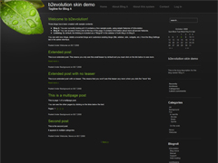

Skin Name: Natural Remedy Blog Theme b2evlution skin Description:Natural Remedy Blog Theme is a dark, simple and stylish b2evolution skin designed by Diet Pill and Skinned by Herbal for b2evolution version: 2.x